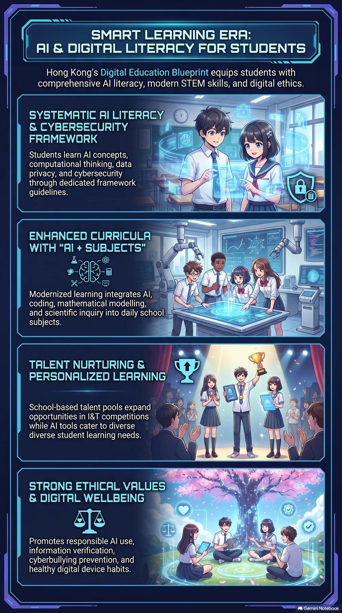

A different audience. A different visual.
Student learning, digital literacy and wellbeing take centre stage.
Portrait layout and anime illustrations replace the broad square overview.
More suitable for the purpose—not automatically more accurate.
